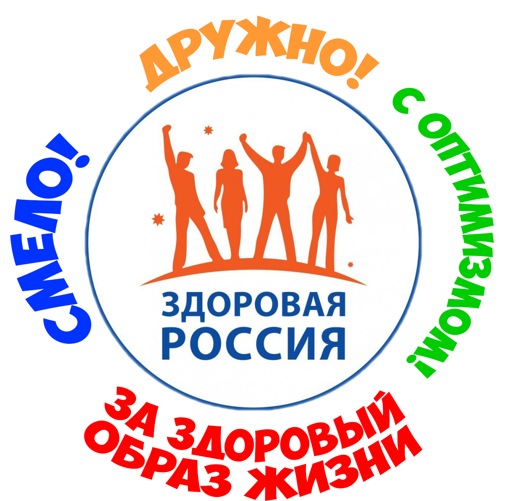
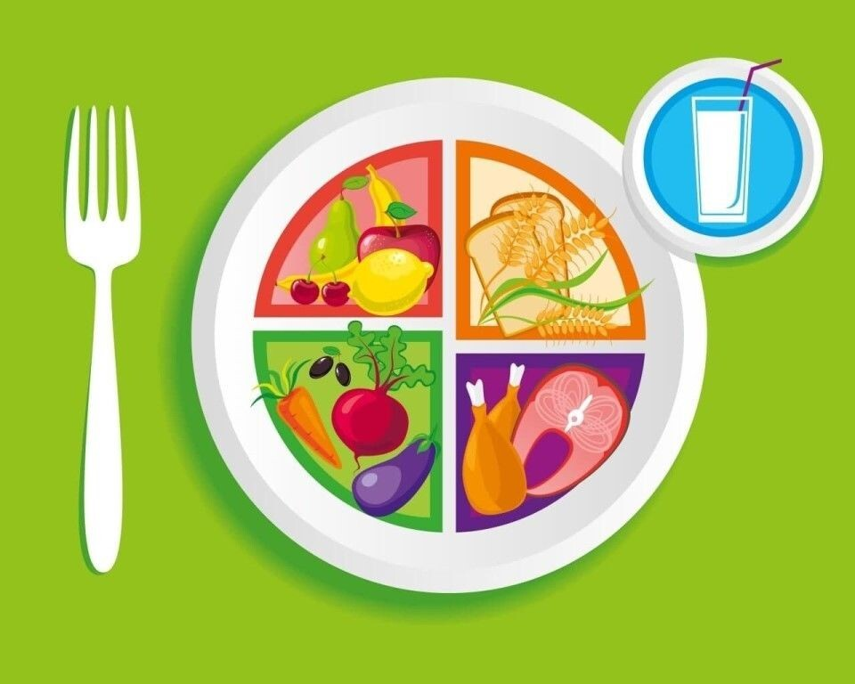
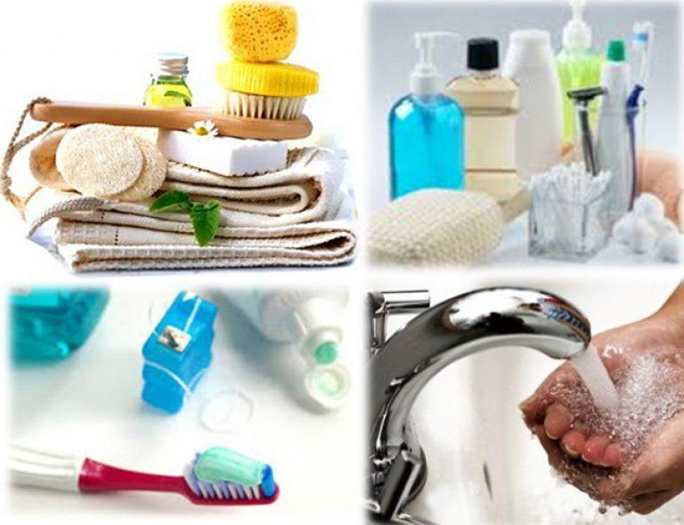
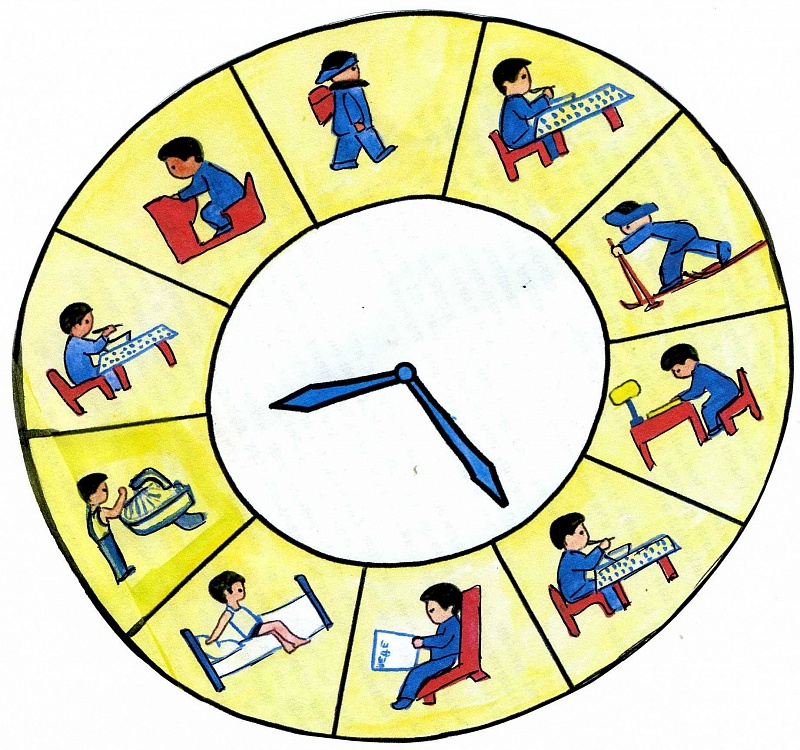
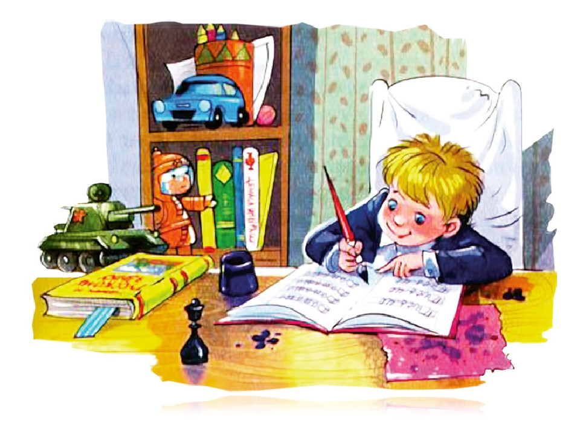
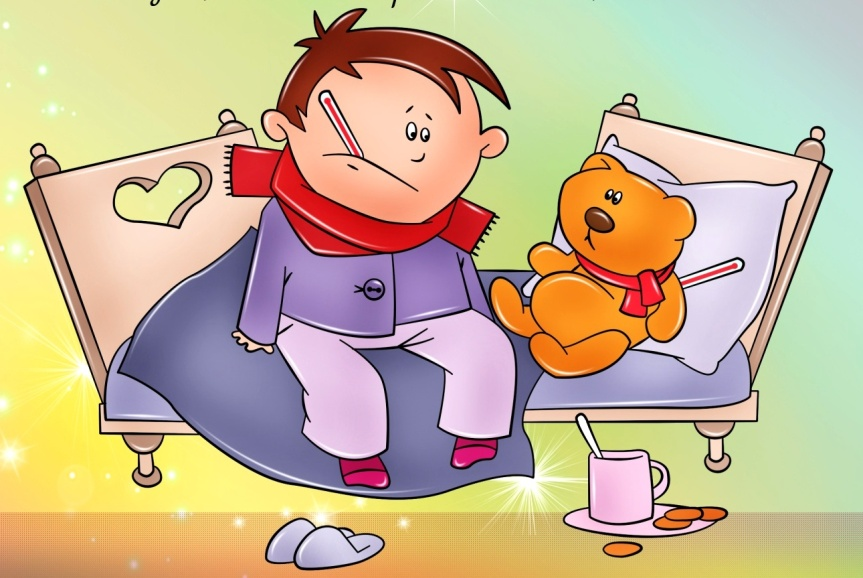
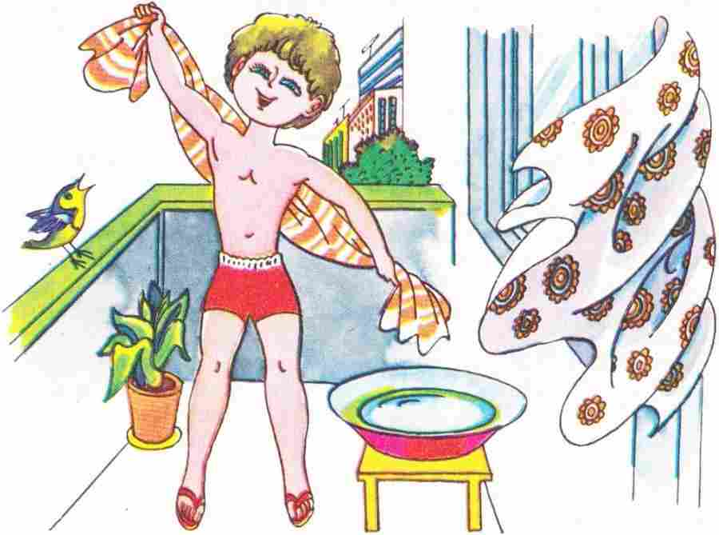
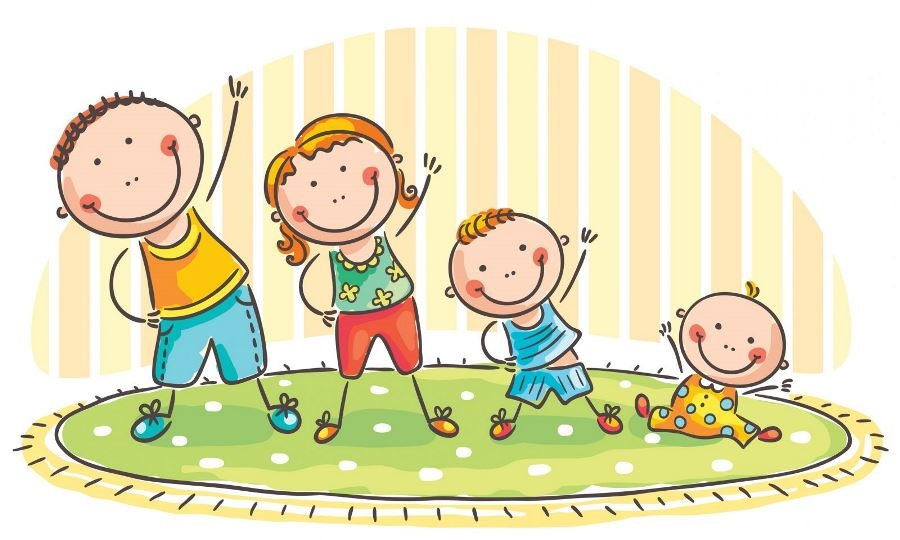
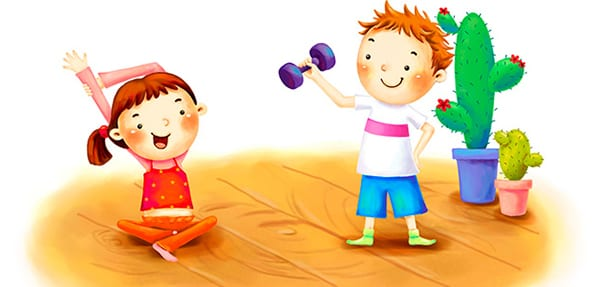

1. ЗОЖ - это..
2. Какой витамин получает организм во время пребывания на солнце?

3. Что полезно есть на завтрак?

4. Как называется наука о чистоте?

5. Как называется распределение времени на сон, еду и активность?

6. Читать и писать надо...

7. Как называется нарушение работы организма?

8. Как называется тренировка оранизма холодной водой?

9. Как называются утренние физические упражнения?
